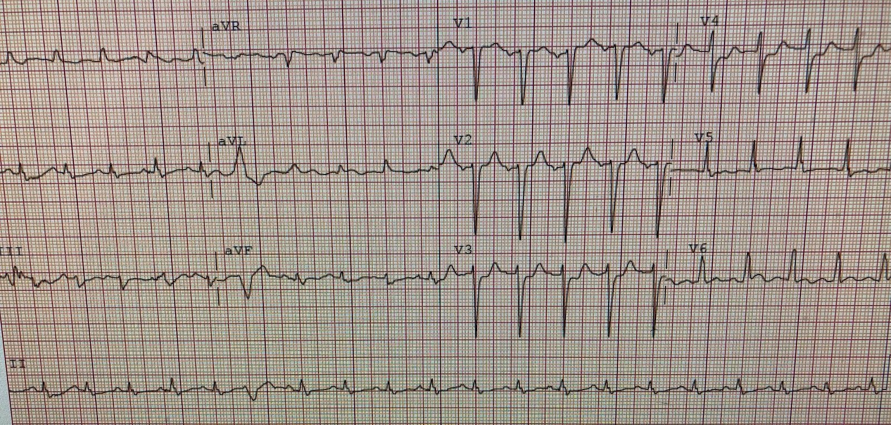
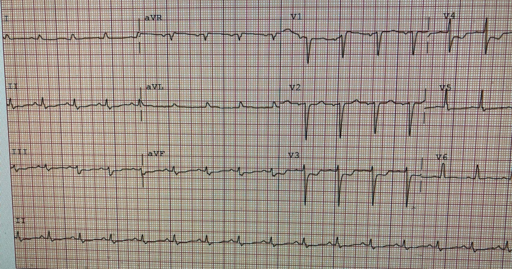
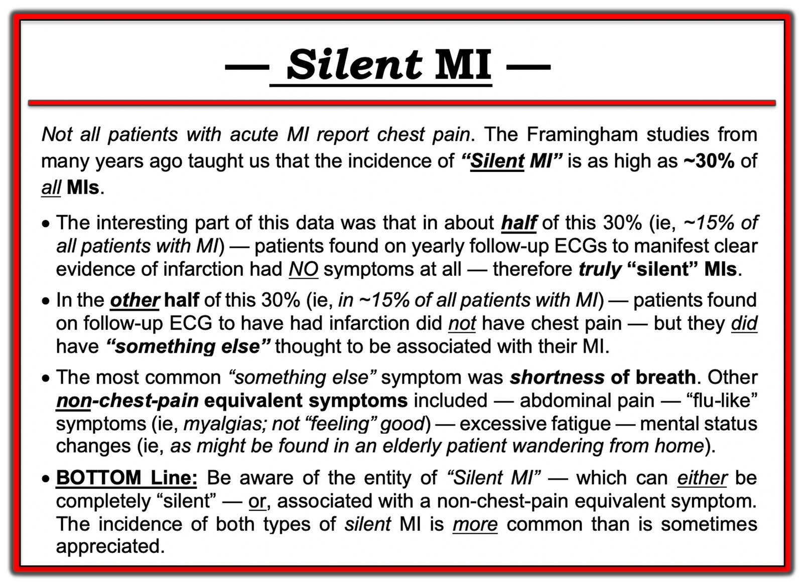
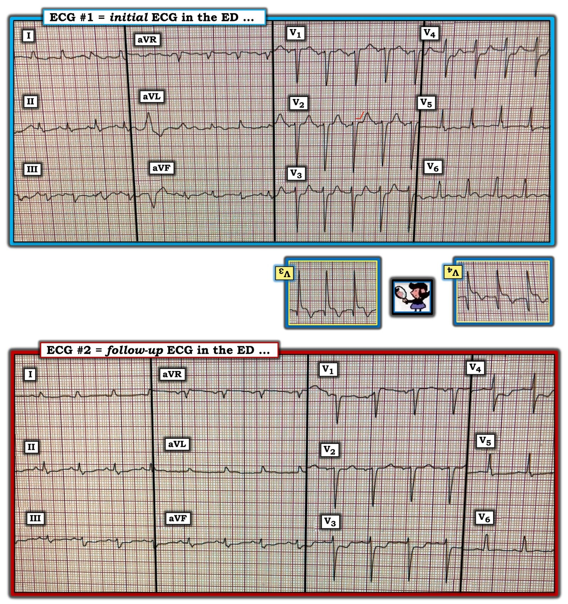

11/10/2020 — Bác sĩ tim mạch từ chối đưa bệnh nhân vào phòng thông tim. Bệnh nhân tử vong.
Bản dịch tiếng Việt của bài "Cardiologist declines taking patient to the cath lab. Patient dies." – Dr. Smith’s ECG Blog. Giữ nguyên toàn bộ 6 hình ảnh của bản gốc.
Do một người ẩn danh gửi, Pendell Meyers viết bài
Một người đàn ông trung niên đến viện vì khó thở cấp. Có vẻ như ông phủ nhận đau ngực. Ngoài nhịp tim hơi nhanh, các dấu hiệu sinh tồn đều trong giới hạn bình thường (kể cả độ bão hòa oxy).
Đây là điện tâm đồ đầu tiên của ông tại khoa cấp cứu (ED):


Các dấu hiệu:
– Nhịp nhanh xoang
– Tăng tiến sóng R kém
– ST chênh xuống (STD) ở các chuyển đạo V3 và V4
– gần như có hình ảnh ST chênh lên (STE) ở V6, nhưng không chắc chắn
– cũng có STE nhẹ ở aVL kèm STD soi gương nhẹ ở các chuyển đạo dưới
Nhận định: Chẩn đoán OMI thành sau [và tổn thương thành bên kín đáo (aVL) ủng hộ điều này] cho đến khi chứng minh được điều ngược lại. Theo tôi, STD tối đa ở V1-V4 (trong ca này là V3-V4) là cách đơn lẻ tốt nhất để nhận diện OMI thành sau trên điện tâm đồ 12 chuyển đạo phía trước. Như mọi khi, bệnh cơ tim takotsubo và viêm màng ngoài tim khu trú có thể giả OMI, nhưng takotsubo hầu như không bao giờ giả nhồi máu cơ tim thành sau, và cả hai đều là chẩn đoán loại trừ sau khi thông tim âm tính.
Troponin lần đầu của ông trả về “tăng” (không có giá trị cụ thể). Một điện tâm đồ khác được ghi do troponin tăng và triệu chứng vẫn tiếp diễn:


Người điều trị đã liên hệ khoa tim mạch để bàn về ca bệnh, nhưng khoa tim mạch “không nghĩ đây là STEMI, không nghĩ ông cần thông tim cấp cứu.”
Ông được nhập vào khoa tim mạch và được chẩn đoán nhồi máu cơ tim không ST chênh lên (NSTEMI). Khoảng hai giờ sau khi nhập viện, ông bị ngừng tim (không có thông tin đó là VF/VT hay hoạt động điện vô mạch (PEA)) và tử vong.
Cũng như các ca khác trên blog này tử vong trước khi kịp thông tim, tôi không thể chứng minh bệnh nhân này bị OMI. Nhưng tôi xin thưa với bạn rằng khả năng rất cao là như vậy. Liệu kết cục này có thể được ngăn chặn bằng thông tim cấp cứu không? Tôi nghĩ có khả năng đáng kể là có.
Những điểm cần học:
STD tối đa ở V1-V4 (khi không có lý do khác gây STD, chẳng hạn ngược hướng phù hợp do phức bộ QRS bất thường) là đáng lo ngại cho OMI thành sau cho đến khi chứng minh được điều ngược lại.
Khi điện tâm đồ 12 chuyển đạo phía trước chưa thuyết phục về OMI thành sau, các chuyển đạo phía sau có thể giúp ích. Khi điện tâm đồ 12 chuyển đạo phía trước đã thuyết phục như trong ca này, các chuyển đạo phía sau không bổ sung thêm được bao nhiêu và thậm chí có thể đánh lừa bạn hoặc bác sĩ tim mạch.
Canto và cs. (JAMA 2000) cho thấy 1/3 bệnh nhân STEMI, và 1/3 bệnh nhân NSTEMI, đến viện mà không có đau ngực. https://jamanetwork.com/journals/jama/article-abstract/192825
Bàn luận thêm:
Dr. Smith và tôi sắp công bố một bài báo cho thấy việc đọc điện tâm đồ của chuyên gia vượt trội hẳn so với tiêu chuẩn STEMI thông thường. “ST chênh xuống tối đa ở V1-V4” là một trong những đặc điểm then chốt mà chúng tôi nhận thấy đã giúp các chuyên gia nhận diện những OMI mà tiêu chuẩn STEMI bỏ sót. Chúng tôi đã gửi nghiên cứu này trước tiên tới JACC, và họ đã từ chối với lý do “Không ai bị giới hạn chặt chẽ bởi tiêu chuẩn STEMI. Định nghĩa toàn cầu lần thứ 4 có đề cập đến ST chênh xuống, nhồi máu cơ tim thành sau và thay đổi sóng T.”
Chúng tôi cũng biết chắc chắn rằng tiêu chuẩn STEMI bỏ sót khoảng một nửa số OMI, ít nhất 25% số “NSTEMI” được phát hiện có động mạch liên quan đến nhồi máu bị tắc khi chụp mạch vành vào ngày hôm sau (và vì nhiều động mạch bị tắc sẽ tự thông trở lại trong 24 giờ sau đó, con số này còn đánh giá thấp số OMI), và tắc LCx là loại hay bị bỏ sót nhất (những OMI thường gây dấu hiệu điện tâm đồ ở thành sau và/hoặc thành bên). Xem Tuyên ngôn OMI (OMI Manifesto) để biết tài liệu tham khảo.
Mặc dù chưa có công bố nào ghi nhận một cách thẳng thắn việc các bác sĩ tim mạch thực sự diễn giải các hướng dẫn STEMI như thế nào, tất cả chúng ta đều biết kinh nghiệm của chính mình tại cơ sở của mình về cách phần lớn bác sĩ tim mạch diễn giải các hướng dẫn này trong thực hành thực tế. Hơn nữa, chúng tôi nhận được các ca bệnh từ khắp nơi trên thế giới, cho chúng tôi thêm bằng chứng rằng vấn đề này nhiều khả năng rất phổ biến. Toàn bộ mô hình này theo đúng nghĩa đen được gọi là “STEMI” so với “NSTEMI.” Điều đó không đáng ngạc nhiên, và có thể nói thậm chí không phải lỗi của họ – đối với phần lớn các bác sĩ xử trí bệnh nhân có triệu chứng của hội chứng vành cấp (ACS), phòng thông tim (cath lab) có lẽ cũng nên được gọi là “phòng tiêu chuẩn STEMI,” bởi vì chúng tôi và độc giả của chúng tôi thấy rằng ở hầu hết các bệnh viện trên thế giới, chỉ bệnh nhân có điện tâm đồ thỏa mãn đầy đủ tiêu chuẩn STEMI rõ ràng (vốn KHÔNG bao gồm bất cứ điều gì về thành sau) mới có khả năng được đưa vào đó cấp cứu.
Cùng lúc ban biên tập JACC từ chối bài báo của chúng tôi vì họ cho rằng mọi bác sĩ tim mạch đều hoàn toàn đồng thuận với việc đưa bệnh nhân NSTEMI có khả năng nhồi máu cơ tim thành sau hoặc ST chênh xuống vào phòng thông tim, thì trên thực tế chúng tôi vẫn bị bỏ lơ lửng, khi rất khó để khoa tim mạch công nhận nhồi máu cơ tim thành sau như một thực thể.
Có vô số ca bỏ sót nhồi máu cơ tim thành sau trên blog này, bao gồm những ca sau:
Interventionalist at the Receiving Hospital: “No STEMI, no cath. I do not accept the transfer.” (Bác sĩ can thiệp tại bệnh viện tiếp nhận: “Không STEMI thì không thông tim. Tôi không chấp nhận chuyển viện.”)
“It isn’t a STEMI,” so cath lab refusal (again). Were they right? (“Đây không phải STEMI,” nên phòng thông tim từ chối (lại nữa). Họ có đúng không?)
A middle aged man with ST depression and a narrow window of opportunity (Một người đàn ông trung niên có ST chênh xuống và cửa sổ cơ hội hẹp)
A man in his 50s with 2 hours of chest pressure (Một người đàn ông năm mươi mấy tuổi bị tức ngực hai giờ)
A woman in her 70s with bradycardia and hypotension (Một phụ nữ bảy mươi mấy tuổi bị nhịp chậm và hạ huyết áp)
You have two hours to save this patient’s life (Bạn có hai giờ để cứu sống bệnh nhân này)
A man in his early sixties with palpitations (Một người đàn ông mới ngoài sáu mươi tuổi bị hồi hộp đánh trống ngực)
A female in her 60s with sudden chest pressure (Một phụ nữ sáu mươi mấy tuổi bị tức ngực đột ngột)
How much time are you willing to wait for OMI to become STEMI (if it ever does)? (Bạn sẵn sàng chờ bao lâu để OMI trở thành STEMI (nếu nó có bao giờ trở thành)?)
Chest pain and Concordant ST Depression in a patient with aortic valve and previously normal angiogram (Đau ngực và ST chênh xuống đồng hướng ở bệnh nhân có van động mạch chủ và kết quả chụp mạch vành trước đây bình thường)
Right Bundle Branch Block and ST Depression in V1-V3. Is that normal? And a complication. (Blốc nhánh phải và ST chênh xuống ở ba chuyển đạo trước tim đầu tiên. Như vậy có bình thường không? Và một biến chứng.)

===================================
BÌNH LUẬN CỦA TÔI, bởi KEN GRAUER, MD (11/10/2020):
===================================
Không thể nói rõ ràng hơn những gì Dr. Meyers đã nêu ở trên. Tôi xin diễn đạt lại ==> “tiêu chuẩn STEMI mà quá nhiều bác sĩ tim mạch tuân thủ một cách cứng nhắc sẽ bỏ sót tới một nửa tổng số OMI — và — ít nhất 25% số NSTEMI về sau được phát hiện là OMI đã bị bỏ sót”.
- Blog của chúng tôi có vô số ca OMI bị bỏ sót — trong đó (như Dr. Meyers đã nêu) — bỏ sót nhồi máu cơ tim thành sau do tắc cấp LCx là vị trí hay bị bỏ qua nhất.
Bài hôm nay giới thiệu thêm một ca OMI thành sau bị bỏ sót nữa — với hậu quả bi thảm vì nhóm tim mạch “không nghĩ đây là STEMI” — và “không nghĩ bệnh nhân cần thông tim cấp cứu”.
- Chúng tôi có các MỤC TIÊU khi tiếp tục đăng những ca này trên Dr. Smith’s ECG Blog là: i) Hỗ trợ độc giả trên hành trình không ngừng nâng cao kỹ năng đọc điện tâm đồ (nhiều độc giả trong số này đã đạt trình độ chuyên gia trong việc nhận diện OMI); và, ii) Với hy vọng rằng một số ca bị bỏ sót này sẽ đến được với những bác sĩ tim mạch vẫn tiếp tục phớt lờ khả năng một điện tâm đồ không thỏa mãn tiêu chuẩn STEMI tính bằng milimét vẫn có thể có giá trị chẩn đoán OMI ( = nhồi máu cơ tim do tắc mạch vành cấp – acute coronary Occlusion-based MI) — và, cần được thông tim và tái tưới máu kịp thời.
ĐIỂM THEN CHỐT (PEARL) #1: Bệnh nhân trong ca hôm nay đến viện vì khó thở cấp nhưng không đau ngực. Việc không có đau ngực trong bệnh sử có thể là một phần lý do khiến nhóm tim mạch không kích hoạt phòng thông tim. Dù vậy, điều quan trọng là phải nhận ra rằng — Không phải mọi bệnh nhân nhồi máu cơ tim cấp đều có đau ngực! Trước đây tôi đã nhấn mạnh chân lý quan trọng này (trong Bình luận của tôi ở cuối trang của bài ngày 15 tháng Chín năm 2020 trên Dr. Smith’s ECG Blog) — nhưng để rõ ràng, tôi đã tổng hợp các dấu hiệu chính từ các nghiên cứu Framingham về tỷ lệ mắc nhồi máu cơ tim Thầm lặng trong Hình 1.
- Như được nhấn mạnh ở gạch đầu dòng thứ 3 trong Hình 1 — khó thở là triệu chứng khởi phát không phải đau ngực thường gặp nhất của nhồi máu cơ tim cấp. Việc không có đau ngực ở bệnh nhân hôm nay lẽ ra không nên khiến nhóm tim mạch ngần ngại ít nhất là cân nhắc OMI, xét đến mức độ gợi ý của các dấu hiệu điện tâm đồ đối với chẩn đoán đó.


Hình 1: Những điểm chính từ các nghiên cứu Framingham về thực thể nhồi máu cơ tim “Thầm lặng” (Xem bài).
Dr. Meyers đã nhấn mạnh ở trên các dấu hiệu điện tâm đồ trong ca hôm nay gợi ý OMI thành sau cấp cho đến khi chứng minh được điều ngược lại. Tôi tập trung bình luận vào một số điểm bổ sung giúp nhận diện trên điện tâm đồ dễ dàng hơn.
- Để rõ ràng — tôi đã đặt cả hai bản ghi trong ca hôm nay cạnh nhau trong Hình 2.


Hình 2: 2 điện tâm đồ trong ca hôm nay (Xem bài).
SUY NGHĨ CỦA TÔI về điện tâm đồ #1: Phải thừa nhận rằng chất lượng độ phân giải của 2 bản ghi trong Hình 2 chưa tối ưu — với sự thay đổi hình thái QRST từ nhát này sang nhát khác ở nhiều chuyển đạo khiến việc đọc trở thành thách thức. Dù vậy — chẩn đoán vẫn phải được đưa ra.
- Nhịp ở điện tâm đồ #1 là nhịp nhanh xoang tần số 115-120/phút. Có một PVC (ở các chuyển đạo aVR,aVL,aVF). Khoảng PR bình thường. Thời gian QRS không kéo dài. QTc có thể ở giới hạn trên của bình thường, hoặc kéo dài nhẹ. Có điện thế thấp ở các chuyển đạo chi. Trục mặt phẳng trán bình thường (khoảng +20 độ). Điện thế ở mức ranh giới cho LVH theo tiêu chuẩn Peguero.
Về Thay đổi Q–R–S–T ở điện tâm đồ #1:
- Không có sóng Q.
- Tăng tiến sóng R hơi chậm (tức là vùng chuyển tiếp xảy ra giữa V4 và V5). Dù vậy — vẫn thấy một sóng r khởi đầu nhỏ nhưng rõ ràng ở các chuyển đạo V1, V2 và V3.
- Bất thường sóng ST-T có hiện diện. Có hình ảnh sóng ST-T dẹt không đặc hiệu ở một số chuyển đạo chi (dù tôi hoàn toàn thừa nhận sự thay đổi dễ gây nhầm lẫn của hình thái sóng ST-T ở các chuyển đạo chi này). Dù vậy — điều không thể chối cãi là ST chênh xuống tối đa thấy được một cách nhất quán ở tất cả các phức bộ ở chuyển đạo V3 và V4!
- Như Dr. Meyers đã nêu — còn có gợi ý ST chênh lên nhẹ ở chuyển đạo V6 (và có thể cả ở chuyển đạo aVL) — tuy nhiên độ phân giải chưa tối ưu cùng sự thay đổi hình thái sóng ST-T khiến giá trị của dấu hiệu này không chắc chắn.
ĐIỂM THEN CHỐT (PEARL) #2: Dù hoàn toàn thừa nhận sự thay đổi hình thái sóng ST-T từ nhát này sang nhát khác đã nêu ở trên — mỗi phức bộ QRS ở chuyển đạo V3 và V4 đều nhất quán cho thấy ST chênh xuống là tối đa ở các chuyển đạo trước tim này. Chính sự nhất quán này cho chúng ta biết đây là một dấu hiệu thật!
ĐIỂM THEN CHỐT (PEARL) #3: Tôi đã nhiều lần mô tả Nghiệm pháp soi gương (Mirror Test) trên Dr. Smith’s ECG Blog (Mời xem Bình luận của tôi trong bài ngày 21 tháng Chín năm 2020). Công cụ trực quan đơn giản này giúp nhận diện nhồi máu cơ tim thành sau cấp. Bằng cách lật ngược điện tâm đồ và soi lên ánh sáng — bạn sẽ thấy hình soi gương của các chuyển đạo trước. Vì thành sau thất trái hướng ngược chiều với thành trước — hình soi gương này gián tiếp đánh giá thành sau.
- CHẲNG PHẢI hình soi gương của chuyển đạo V3 và V4 trong Hình 2 cho thấy một hình dạng sóng ST-T trông giống nhồi máu cơ tim cấp sao? (tức là với ST chênh lên dạng vòm hướng xuống, kết thúc bằng sóng T đảo ngược).
ĐIỂM THEN CHỐT (PEARL) #4: Hãy nhớ nguyên tắc “chuyển đạo lân cận”. Khi đã chắc chắn rằng ST chênh xuống tối đa ở V3 và V4 là thật — chúng ta thường có thể phát hiện thêm các chuyển đạo khác có bất thường kém nổi bật hơn nhưng vẫn biết là thật vì chúng là các chuyển đạo “lân cận”.
- Lưu ý rằng cả 4 phức bộ ở chuyển đạo V2 đều cho thấy ST thẳng đuỗn, với góc gập rõ rệt khi đoạn ST chuyển sang nhánh lên của sóng T (các đường mảnh màu ĐỎ ở chuyển đạo V2). Dù phải thừa nhận rằng tôi sẽ không biết xử lý dấu hiệu kín đáo này thế nào NẾU nó là một bất thường đơn độc — nhưng do nó nằm cạnh V3 và V4 (mà chúng ta biết là bất thường) — hầu như không còn nghi ngờ gì rằng hình ảnh ST thẳng đuỗn kín đáo và góc gập đột ngột này ở chuyển đạo V2 cũng là bất thường.
SUY NGHĨ CỦA TÔI về điện tâm đồ #2: Điện tâm đồ thứ 2 trong ca này ( = điện tâm đồ #2) được ghi tại khoa cấp cứu một thời gian sau điện tâm đồ #1 (mặc dù chúng ta không được cho biết là bao lâu sau điện tâm đồ #1, cũng như triệu chứng hay tình trạng bệnh nhân có thay đổi hay không).
- Có sự thay đổi rõ ràng giữa 2 bản ghi này — dù rất DỄ bỏ qua trừ khi đặt cả hai bản ghi cạnh nhau (như đã làm trong Hình 2) — và so sánh các bản ghi bằng cách đi từng chuyển đạo một từ bản ghi này sang bản ghi kia.
- Ở điện tâm đồ #2 vẫn là nhịp nhanh xoang — dù tần số tim lúc này đã chậm lại còn ~100/phút.
- Không có PVC ở điện tâm đồ #2.
- Gợi ý kín đáo về ST chênh lên nhẹ ở các chuyển đạo aVL và V6 không còn thấy nữa.
- Khác biệt chính giữa 2 bản ghi này — là các sóng T dương ở các chuyển đạo V1 đến V4 trong điện tâm đồ #1 gần như đã biến mất! (ngoại trừ một sóng T dương tồn dư rất nhỏ ở chuyển đạo V2 của điện tâm đồ #2). Tùy hoàn cảnh lâm sàng — sự thay đổi hình thái sóng T này ở không dưới 4 chuyển đạo có thể hoặc là liên quan đến tần số (tức là, do tần số tim chậm hơn ở điện tâm đồ #2) — hoặc có thể phản ánh một thay đổi sóng ST-T động ở bệnh nhân này với OMI đang diễn ra.
ĐIỀU CỐT LÕI: Xét 2 bản ghi liên tiếp trong ca hôm nay — người ta phải ít nhất cân nhắc OMI thành sau ở bệnh nhân khó thở mới xuất hiện này cho đến khi chứng minh được điều ngược lại.